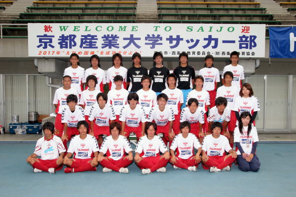
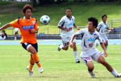
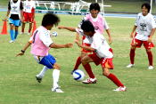
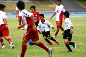
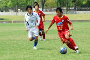

京都産業大学 サッカー部 キャンプリポート

京都府「京都産業大学 サッカー部」74名の皆さんが、西条市“ひうち陸上競技場”・“東予運動公園球技場”での合宿に、8月9日から6日間来ていただきました。
毎年恒例の愛媛合宿です。
今季は残念ながら二部からのスタートになりますが、9月からの秋季リーグで一部復帰を目指しての戦力アップを目的とした西条での合宿です。
今回の合宿ではＡチームは「しまなみＦＣ」との練習試合、Ｂチームは「西条高校」との練習試合を実施され、地元チームとの交流にも積極的に取り組んでいただき、レベルアップにも寄与していただきました。
また、13日には恒例の子供たち向けのサッカー教室を実施していただき、参加した子供たちはいきいきと練習に取り組んでいました。
今後も合宿の成果を生かしてご活躍いただくことをお祈りします。
京都産業大学体育会サッカー部 古井監督より
今回も西条市で合宿をさせていただきありがとうございます。
西条市の、いろいろな方々からの応援があり、温かいご配慮をいただいて今の京都産業大学サッカー部がございます。
毎年、春・夏の合宿で常に万全な状態で練習に臨めるということは、宿泊施設や西条市による協力のものだと感じております。
感謝の気持ちを忘れず日々精進して行きたいと思います。
これからも温かい応援をよろしくお願いいたします。
|  |
※このぺージの内容は京都産業大学
サッカー部様のご承認をいただいて掲載いたしております。